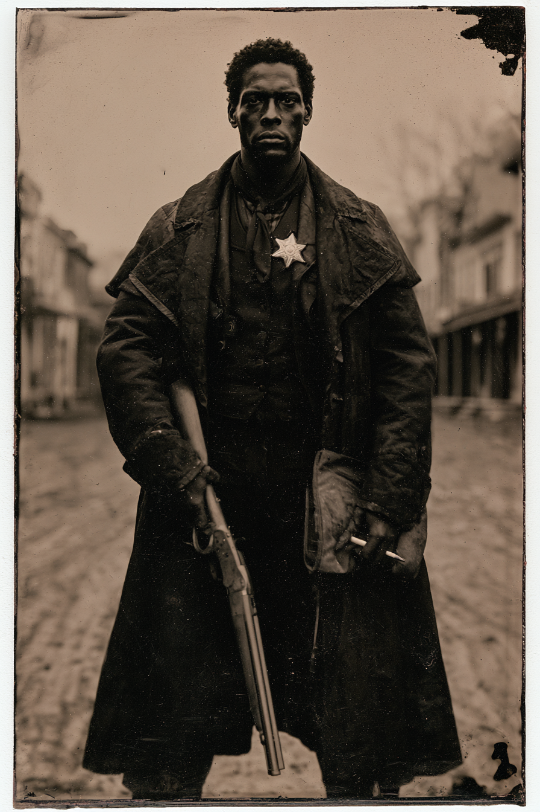

Archetyp: TERRITORIAL RANGER (Territorialer Ranger)
„Da draußen gibt’s nichts, was der Stern nicht überdauern kann, solange der Mann, der ihn trägt, nicht aufgibt.“
Hintergrund. Amos ritt sechs Jahre bei der 9. Kavallerie aus Fort Laramie und kam mit einer steifen Schulter heraus, einer Sergeantenpension, die er nie abholte, und der absoluten Überzeugung, dass der einzige Unterschied zwischen einer Stadt und einem Friedhof jemand ist, der bereit ist, auf der Straße stehen zu bleiben. Lydia Oakes unterschrieb seine Verpflichtung persönlich, nachdem er elf Meilen mit einem verwundeten Siedler auf dem Rücken gegangen war und einen schriftlichen Bericht abgeliefert hatte, bevor er den Doktor an sich heranließ. Er führt ein Feldbuch in Ölzeug, datiert und abgezeichnet — daher der Spitzname —, und er schreibt jeden Abend schlecht und gewissenhaft hinein. Er ist kein kluger Mann und weiß das; er gleicht es mit Papierkram, Vorschrift und der schlichten Weigerung aus, sich von der Stelle bewegen zu lassen. Die Posse weiß genau, was er ist — er kündigt den Stern jedem an, jedes Mal, auch Dingen, die offensichtlich keinen Haftbefehl lesen können, denn der Eid kennt keine Ausnahme für Monster.
Build. Geschicklichkeit W8, Verstand W4, Geist W6, Stärke W6, Konstitution W6 · Parade 5, Robustheit 5 (7 mit Mantel) Schießen W8, Kämpfen W6, Reiten W6, Einschüchtern W6, Bemerken W6, Überleben W4 Talente: Territorial Ranger (Territorialer Ranger), Guts (Mumm), Brave (Mutig) Handicaps: Vow (Schwur) — Major: kein Ruf bleibt unbeantwortet, und er lügt nicht, solange der Stern an der Brust ist · Stubborn (Stur) — Minor · Loyal — Minor Ausrüstung: gepanzerter Reitermantel, Winchester-Vorderschaftrepetierflinte als gewählte Schrotflinte, Colt Peacemaker, Bowiemesser, drei Stangen Dynamit am Sattel, der Stern, das Fahndungsbuch und das Feldbuch in Ölzeug. Rund 160 seiner 250 Dollar liegen noch als Bankanweisung da, weil er nichts ausgibt. Erste Steigerung auf Erfahren: Double Tap.
| Agility | d8 | 2 |
| Smarts | d4 | 0 |
| Spirit | d6 | 1 |
| Strength | d6 | 1 |
| Vigor | d6 | 1 |
| Skill | Attr. | Die | Pts. |
|---|---|---|---|
| Shooting | Agi | d8 | 3 |
| Fighting | Agi | d6 | 2 |
| Riding | Agi | d6 | 2 |
| Intimidation | Spi | d6 | 2 |
| Notice | Sma | d6 | 2 |
| Survival | Sma | d4 | 1 |
Aufhänger. Amos’ Eid und seine Befehle sind nicht dasselbe Dokument, und Kompanie C ist im Begriff, das zu beweisen. Sein Leutnant stempelt neuerdings bestimmte Vorfälle als „erledigt — keine weiteren Maßnahmen“ und sagt ihm leise, welche Witwen er nicht befragen soll. Amos hat für jeden dieser Fälle eine Seite im Feldbuch, datiert und abgezeichnet. Kapitel 13 darf er nicht lesen — er ist kein Leutnant —, also kann er schlicht nicht beurteilen, ob die Vertuschungen die Rangers sind, die die Öffentlichkeit vor einer zu großen Wahrheit schützen, oder die Rangers, die jemandes Mineninvestition schützen. Schlimmer: der Leutnant, der stempelt, ist der Mann, der ihn empfohlen hat.
Warum es Spaß macht. Er ist das unbewegliche Objekt in der Tischmitte — der Mann, der mit einer Schrotflinte und einem Notizbuch auf das Heulen zugeht und an dessen Mumm+Mutig sich alle anderen Angstproben festhalten. Verstand W4 heißt, dass ihn alles, was einen Plan erfordert, herrlich überfordert: er streitet nicht, er bewegt sich nur nicht.
Regelgrundlage: Regelnotizen · Archetyp-Notizen